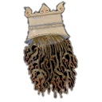

صور الكوكبات السماوية
"صور الكوكبات الشمالية"
الدب الأصغر

الدب الأكبر

التنين

الملتهب

العوّاء

الإكليل الشمالي

الجاثي

السلحفاة

الدجاجة

ذات الكرسي

حامل رأس الغول

ممسك الأعنة

الحوّاء و الحيّة

السهم

العقاب

الدلفين

قطعة الفرس

الفرس الأعظم

المرأة المسلسلة

المثلث

"صور الكوكبات الجنوبية"
قيطس

الجبار

النهر

الأرنب

الكلب الأكبر

الكلب الأصغر

السفينة

الشجاع

الباطية

الغراب

قنطورس و السبع

المجمرة
الإكليل الجنوبي

الحوت الجنوبي

"صور الأبراج الإثني عشر"
الحمل

الثور

التوأمان

السرطان

الأسد

العذراء

الميزان

العقرب

الرامي وهو القوس

الجدي

الدلو و هو ساكب الماء

الحوت

صورة العواء على ما ترى في السماء
نقلاً عن مخطوط صور الكواكب الثابتة من مكتبة باريس الرقمية

ذِكْر العوّاء
قال ناظم الأرجوزة أبو علي الحسين بن عبدالرحمن الرازي، ابن الفلكي الشهير عبدالرحمن بن عمر الرازي المشهور بالصوفي:
أسماء كوكبة العوّاء
وبعدما سمعت ماذكرناه عن كوكبة قيقاوس(الملتهب) نبدأ بذكر كوكبة العواء.
حيث جاءت الأخبار عن الروم أنها تسمّى هذه الكوكبة بعدة أسماء وهي العواء، وحارس السماء، وحارس السماك، وحارس الشمال، والصنّاج (وفي بعض المخطوطات الصياح)، والبقّار.
فأما اسمي العواء والصيّاح والبقار فأصلها أن الصورة الإغريقية هي لرجل يرعى قطيعاً من البقر ويصيح عليها بصوته. وأما الصنّاج فمعناه العازف ولا أعلم مصدر هذا الاسم مع أنه هو الوارد في أقدم المخطوطات.
بينما يأتي حارس السماء وحارس الشمال من الترجمة لكلمة Arcturus، وهي اسم اسطع نجوم هذه الكوكبة وأصلها الإغريقي يعني حارس الشمال وحارس الدب (إي حارس الدب الأكبر القريب منه).
وربما كان اسم حارس السماء يأتي من كون هذا النجم يرى كل ليلة في السماء، فإذا كان شروقه مع الشمس فإنه يغيب بعدها بمدة، وإذا كان غيابه مع الشمس فإنه يطلع قبلها بمدة، وفي غير ذلك يكون مكثه في السماء أطول.
وأما حارس السماك فلم أجد لهذا الاسم أصلا ولا في كتاب صور الكواكب، ولكن السماك الرامح هو اسم اسطع نجوم هذه الكوكبة وهو الذي يسمى عند الإغريق كما قلنا حارس السماء وحارس الشمال.


الضباع
وأول نجوم هذه الصورة هي النجوم الخفية التي على راحة اليد وماحولها، وهي تسمى أولاد الضباع، والضباع هي النجوم الأكثر لمعاناً على رأس وكتف الصورة. ولاحظ أن هذه النجوم قريبة من النجم الذي يسمى الذيخ، وهو ذكر الضباع، في كوكبة التنين. ولذلك فإن نجوم هذه البقعة من السماء عند العرب هي لذكر الضباع والضباع وأولادها.

السماك الرامح
وبعد هذه النجوم ترى نجماً ساطعاً كالشهاب وهو الذي تسميه العرب السماك الرامح. والسماك الرامح هو الرابع بين ألمع النجوم في السماء بعد الشعرى اليمانية وسهيل ورجل قنطورس. ويمكن الاستدلال عليه بسهولة بمد خط وهمي من آخر نجمين في ذيل الدب الأكبر إليه. وسمي السماك الرامح بسبب نجمين لامعين حوله كأنهما بمثابة الرمح له. وحول هذين النجمين اللامعين نجوم خفية.

السلاح
والسماك الرامح سمّي بذلك لقربه من نجمين هما بمثابة الرمح له، وحول هذين النجمين نجومٌ صغيرة خفيّة تسميها العرب السلاح.
الرمح و العذب راية السماك
ويتقدم السماك الرامح أول هذين النجمين، وهو نجم لامع يقع بالقرب من حزام العواء، وبالقرب منه نجمين خافتين، يراهما من له بصر جيد، وتسمّى هذه النجوم راية السماك. ثم يأتي النجم الثاني، وهو نجم لامع أيضا، وحوله نجمان خفيان، وتقع هذه النجوم على الكعب من رجل العواء.وهذان النجمان اللامعان هما الرمح بينما النجمان الخفيان هما عذبة الرمح. والعذبة هي خرقة تشد على رأس الرمح.


- الملتهب
إعداد قتيبة أقرع
- الإكليل الشمالي